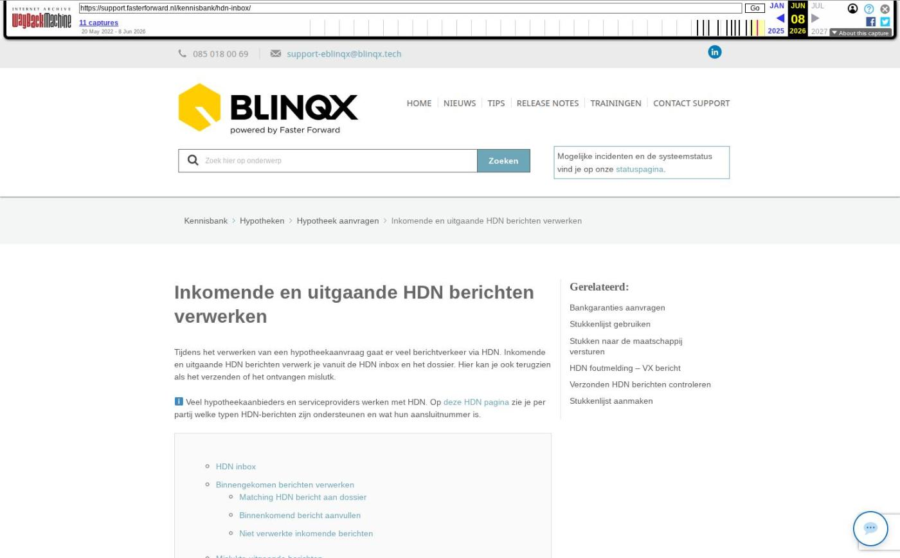

Inkomende en uitgaande HDN berichten verwerken

Tekstinhoud
Inkomende en uitgaande HDN berichten verwerken
Tijdens het verwerken van een hypotheekaanvraag gaat er veel berichtverkeer via HDN. Inkomende en uitgaande HDN berichten verwerk je vanuit de HDN inbox en het dossier. Hier kan je ook terugzien als het verzenden of het ontvangen mislutk.
Veel hypotheekaanbieders en serviceproviders werken met HDN. Op deze HDN pagina zie je per partij welke typen HDN-berichten zijn ondersteunen en wat hun aansluitnummer is.
HDN inbox
Binnengekomen berichten verwerken
Matching HDN bericht aan dossier
Binnenkomend bericht aanvullen
Niet verwerkte inkomende berichten
Mislukte uitgaande berichten
Foutmeldingen per type bericht
Document berichten
Aanvraag- of levensberichten
Validatie
Bericht nogmaals verzenden
Bericht niet nogmaals verzenden
HDN inbox
De HDN inbox vind je terug op het dashboard van eBlinqx. Hier vind je alle binnenkomende berichten en eventueel uitgevallen (uitgaande) berichten of mislukte binnenkomende berichten. Op het dashboard staat dan bijvoorbeeld 15 HDN berichten vereisen actie. De volgende type berichten zijn hiervan uitgesloten:
Mislukte import van DX berichten omdat er geen bijbehorende offerteaanvraag is gevonden.
Mislukte import van SX berichten omdat er geen bijbehorende bericht is gevonden.
DA bericht waarbij al een recenter bericht is ingelezen ingelezen.
Binnengekomen berichten verwerken
Matching HDN bericht aan dossier
Binnengekomen berichten worden aan het bijbehorende klantdossier gekoppeld als er match gevonden kan worden. De matching gebeurt kan op verschillende manieren gebeuren, namelijk:
Dossier-id
Wanneer je de aanvraag start vanuit het dossier – tabblad betreffende adviespakket dan wordt er een ID meegestuurd. Zodra je de aanvraag vanuit het adviespakket terugstuurt naar eBlinqx dan wordt dit ID weer meegestuurd en wordt aan de hand van dit ID de aanvraag aan het dossier gekoppeld. In sommige adviespakketten is er eventueel ook een veld aanwezig waarin je het extern ID (dossiernummer eBlinqx) kan invullen.
Settings
Als je de aanvraag niet start vanuit het dossier of je vult in het adviespakket niet een extern ID in dan wordt er voor de matching gekeken naar bepaalde ingestelde settings. Deze settings kan je niet zelf beheren. In de meeste gevallen wordt er gekeken naar de achternaam, geslacht en de geboortedatum van de persoon in het aanvraagbericht en in het klantdossier. Als deze exact overeenkomen dan wordt het bericht gematcht aan het dossier. Kan er geen exacte overeenkomst gevonden worden dan wordt er een nieuw dossier aangemaakt. Let op: hierbij wordt ook gekeken naar het aantal personen in het aanvraagbericht en in het dossier. Ook wordt er gekeken naar de meisjesnaam. Stel dat in het aanvraagbericht mevrouw met alleen haar meisjesnaam staat en in eBlinqx met haar meisjesnaam en aangetrouwde naam dan is het geen exacte match en wordt er een nieuw dossier aangemaakt.
Ons advies is dan ook om de aanvraag vanuit het dossier te starten.
Binnenkomend bericht aanvullen
Indien een binnengekomen bericht niet automatisch verwerkt kan worden, wordt er aangegeven dat er actie vereist is. In het overzicht herken je deze aan een oranje dossiericoon wat vooraan de regel staat. Klik op het potlood aan de rechterkant van de regel om het bericht aan te vullen. Vervolgens wordt er een nieuw product in het klantdossier (als er een match gemaakt kon worden op dossier) of een nieuw klantdossier (als er geen match gemaakt kan worden) aangemaakt.
In de kolom Dossier komt het dossiernummer te staan, waarop je kan klikken om direct naar het dossier te gaan. Of je klikt op de naam van de offerte om direct naar het product te gaan. In het product kan je de workflow doorlopen om de aanvraag te versturen. Lees hier meer informatie over het versturen van een HDN bericht.
Niet verwerkte inkomende berichten
Het kan gebeuren dat inkomende HDN berichten niet door eBlinqx verwerkt kunnen worden. Deze berichten komen in de HDN inbox onder het tabblad 'Inkomend mislukt' te staan. Hier zie je waarom inkomende HDN berichten niet verwerkt zijn.
In het tabblad 'Inkomend mislukt' staat ook de foutmelding. Omdat het bericht van de geldverstrekker komt, moet je deze foutmelding doorgeven aan de geldverstrekker. In de meeste gevallen moet de geldverstrekker het bericht opnieuw verzenden.
Mislukte uitgaande berichten
In het tabblad 'Uitgaand mislukt' zie je berichten waarbij een fout is opgetreden bij het verzenden, waardoor HDN het bericht niet kan verwerken.
Foutmeldingen per type bericht
Document berichten
Wanneer hier DX berichten zichtbaar zijn, kun je deze het best opnieuw versturen door op het ververs-icoon achter het bericht te klikken. eBlinqx probeert het bericht dan nogmaals te versturen. Wanneer het een validatiefout betreft dan kan het bericht niet nogmaals verzenden via het ververs-icoon. Deze is dan niet zichtbaar.
Ook is het mogelijk om meerdere berichten in één keer tegelijk te verzenden. Dit doe je door de checkbox voor het bericht aan te vinken en te klikken op 'Geselecteerde HDN-berichten opnieuw versturen'.
Aanvraag- of levensberichten
Indien het versturen van een AX of LX bericht mislukt is dan kunnen er verschillende oorzaken zijn. De foutmelding is te lezen bij status. Lees hier wat de foutmelding inhoudt en hoe deze te verhelpen is.
Validatie
Daarnaast kan je een VX – foutmelding vanuit HDN of de maatschappij krijgen. De kolom 'Oorzaak fout' geeft dan validatie aan. Vaak is er een veld niet of niet goed gevuld waardoor het bericht niet gevalideerd wordt. Hier kan je lezen hoe je zo'n VX bericht kan lezen. Dan raden wij jou aan om de aanvraag nogmaals in jouw adviespakket te controleren en te versturen naar eBlinqx. Mocht je in het adviespakket een foutmelding krijgen, neem dan contact op met jouw adviespakket.
Bericht nogmaals verzenden
Vanuit de HDN inbox – uitgaand mislukt is het mogelijk om berichten nogmaals te verzenden. Achter het bericht staat dan een ververs-icoon. Ook is het mogelijk om meerdere berichten tegelijk te versturen. Dit doe je door de checkbox voor het bericht aan te vinken en te klikken op 'Geselecteerde HDN-berichten opnieuw versturen'.
Let op: bij berichten waarbij de oorzaak een validatiefout is, is het niet mogelijk deze opnieuw te verzenden. Wanneer je deze aan vinkt en via de knop verzendt dan worden deze niet opnieuw klaargezet om te verzenden. Wanneer een fout in het bericht zelf zit, zoals bij VX berichten, dan heeft het geen zin om deze opnieuw te verzenden zonder dat er iets met de fout is gedaan.
Bericht niet nogmaals verzenden
Indien het niet nodig is om het bericht nogmaals te versturen dan kan je op het vinkje klikken achter het bericht om deze als afgehandeld aan te merken. Middels de checkbox voor de berichten kan je meerdere berichten selecteren om deze vervolgens met een klik te markeren als afgehandeld. Dit met de knop 'Geselecteerde HDN-berichten afvinken'.
Laatste update: 27 mei 2026
Tagged: hdn
Was deze informatie nuttig?
Ja Nee